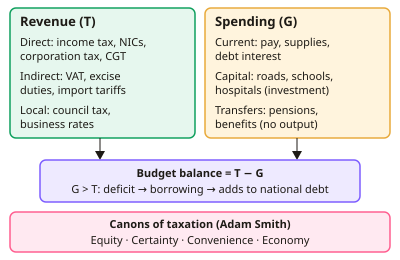

A-level Economics Year 13 · Topic 13
Fiscal policy and public finances
This topic looks closely at how governments raise and spend money, and how fiscal policy affects the economy.
We will cover types of spending and taxation, tax incidence and incentives, and the Laffer curve.
Then we examine fiscal stance, the multiplier, deficits and debt, crowding out, and fiscal rules.
- 6 subtopics
- 252 questions
- Free: 13.1 notes and 10 questions
In this topic
- 13.1Government spending and taxation: types, trends and the canons of taxationFree below · 36 questions
- 13.2Direct and indirect taxes, tax incidence and effects on incentivesOpen in Full Marks · 36 questions
- 13.3The Laffer curve and the effect of tax rates on revenue and incentivesOpen in Full Marks · 16 questions
- 13.4Fiscal policy: stance, discretionary policy, automatic stabilisers and the multiplierOpen in Full Marks · 73 questions
- 13.5Budget deficits, surpluses and national debt: causes, consequences and crowding outOpen in Full Marks · 30 questions
- 13.6Fiscal rules, debt sustainability and evaluating the effectiveness of fiscal policyOpen in Full Marks · 61 questions
13.1 · Free notes
Government spending and taxation: types, trends and the canons of taxation

Key points
- Fiscal policy is the use of government spending, taxation and borrowing to influence aggregate demand, aggregate supply and the distribution of income.
- Current spending pays for day-to-day running costs: public-sector wages, goods and services bought, and debt interest. Capital spending is investment in lasting assets such as roads, hospitals and schools, which raise future productive capacity.
- Transfer payments (state pension, Universal Credit, Child Benefit) redistribute income. Nothing is produced in return, so they are not part of government's direct contribution to GDP (not part of G in AD).
- UK government spending is about 44–45% of GDP. The largest items are social protection (pensions and benefits), health and education. Spending peaked at over 50% of GDP in 2020–21 because of COVID-19.
- Trends: spending as a share of GDP rose after the 2008 financial crisis and fell during 2010s austerity. Pressures now come from an ageing population (health, pensions) and higher debt interest.
- Direct taxes are levied on income and wealth (income tax, NICs, corporation tax, CGT, inheritance tax). Indirect taxes are levied on spending (VAT, excise duties, tariffs). Income tax, NICs and VAT raise the most UK revenue.
- Progressive taxes take a rising proportion of income as income rises (average rate rises). Proportional taxes take a constant proportion. Regressive taxes take a falling proportion (a flat charge on every household is regressive).
- Average rate = tax paid ÷ income × 100. Marginal rate = change in tax ÷ change in income × 100. A progressive system needs a marginal rate above the average rate.
- Adam Smith's canons of taxation: equity (fairness, ability to pay), certainty, convenience and economy/efficiency (low collection cost). Modern additions: flexibility and neutrality. Equity may be horizontal (equal treatment of equals) or vertical (those with more pay more).
- Purposes of tax: raise revenue, redistribute income, correct externalities (fuel duty, sugar levy), discourage demerit goods, and manage aggregate demand. For evaluation, no tax meets all canons, and equity often conflicts with efficiency and simplicity.
- A budget deficit is the annual gap when G exceeds T (a flow). The national debt is the accumulated stock of past borrowing. In a recession automatic stabilisers (lower tax receipts, higher benefits) widen the cyclical deficit. Avoidance is legal; evasion is illegal.
In more detail
- Worked spending share: government spending of £1,250bn with GDP of £2,800bn → spending ≈ 44.6% of GDP.
- Canons in practice: income tax collected through PAYE is convenient and cheap to collect, while council tax is criticised as unfair because it is still based on 1991 property values.
- Worked average vs marginal rate: someone earning £30,000 pays (30,000 − 12,570) × 20% = £3,486 in income tax, an average rate of about 11.6% but a marginal rate of 20%.
- A tax with several purposes: tobacco duty raises revenue, discourages a demerit good and helps cover the NHS costs of smoking-related illness.
Practice
Government spending and taxation: types, trends and the canons of taxation: 10 questions
Pick an answer to check it, or open the answer for the explanation.
1. Which of the following is an example of a government transfer payment?
- Salary of an NHS nurse
- Purchase of military equipment
- Building a new bypass
- Payment of the state pension
Show answer
D: Payment of the state pension. Transfer payments such as pensions and benefits redistribute income with no good or service produced in return. Wages, infrastructure and equipment are payments for output.
2. Which item is classified as government capital expenditure?
- Interest on the national debt
- Jobseeker's benefit payments
- Funding a new high-speed rail line
- Pay of teachers in state schools
Show answer
C: Funding a new high-speed rail line. Capital spending is investment in long-lived physical assets such as rail infrastructure. Debt interest and wages are current spending; benefits are transfers.
3. A tax is collected at a known date and rate, so people can work out what they owe in advance. Which canon is this?
- Equity
- Convenience
- Certainty
- Economy
Show answer
C: Certainty. Certainty means the amount, timing and method of payment are clear to the taxpayer. Convenience concerns ease of payment, and economy concerns low collection costs.
4. A worker earns £30,000 and pays £4,500 in income tax. What is the average rate of tax?
- 15%
- 20%
- 13.3%
- 45%
Show answer
A: 15%. Average rate = tax paid ÷ income × 100 = 4,500 ÷ 30,000 × 100 = 15%.
5. Income rises from £50,000 to £60,000 and tax paid rises from £8,000 to £11,500. What is the marginal rate on the extra income?
- 19.2%
- 40%
- 13.3%
- 35%
Show answer
D: 35%. Marginal rate = change in tax ÷ change in income = 3,500 ÷ 10,000 = 35%. 19.2% is the new average rate (11,500 ÷ 60,000).
6. Which statement correctly describes a progressive tax?
- The marginal rate is below the average rate
- Tax paid as a % of income falls as income rises
- The average rate rises as income rises
- Everyone pays the same amount in pounds
Show answer
C: The average rate rises as income rises. A progressive tax takes a larger proportion of income from higher earners, so the average rate rises with income. Falling proportions describe a regressive tax.
7. A flat charge of £170 a year is levied on every household. Relative to income, this tax is:
- Ad valorem
- Progressive
- Proportional
- Regressive
Show answer
D: Regressive. A fixed sum takes a bigger proportion of a low income than a high one, so the average rate falls as income rises. That is regressive.
8. Which statement about the budget deficit and the national debt is correct?
- The national debt is the annual gap between G and T
- The debt falls whenever the government runs a deficit
- A deficit means tax revenue exceeds government spending
- A deficit is an annual flow that adds to the debt stock
Show answer
D: A deficit is an annual flow that adds to the debt stock. The deficit is the yearly shortfall (T below G), financed by borrowing. Each deficit adds to the accumulated stock of debt.
9. In a recession the budget deficit usually widens even with no change in policy. This is mainly due to:
- Lower debt interest payments
- Automatic stabilisers: lower tax receipts and higher benefit payments
- A legal rise in capital spending
- Higher VAT revenue from rising consumption
Show answer
B: Automatic stabilisers: lower tax receipts and higher benefit payments. Falling incomes and profits cut tax receipts while unemployment-related benefits rise, so the cyclical deficit grows automatically.
10. Two workers have identical incomes and circumstances but pay different amounts of income tax. Which principle is breached?
- Horizontal equity
- Flexibility
- Vertical equity
- Convenience
Show answer
A: Horizontal equity. Horizontal equity requires people in the same circumstances to be taxed equally. Vertical equity concerns how those with different abilities to pay are treated.
Keep going in Full Marks
Full Marks has 36 questions on Government spending and taxation: types, trends and the canons of taxation (26 more than here), set out in practice levels. You also get notes and 3D models for all 6 subtopics of Fiscal policy and public finances, plus games, timed exams and past papers.